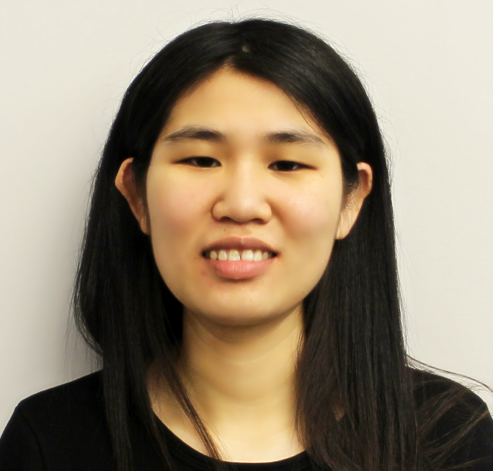

Yanfang Le
yanfang@cs.wisc.edu
I am a Principal Network Architect at AMD<\br>. I completed my PhD in the Department of Computer Sciences at the University of Wisconsin - Madison. My advisors are Prof. Aditya Akella and Michael Swift. I am broadly interested in networking and systems research. My recent work is in the area of distributed systems, programmable hardware, RDMA, congestion control protocols and network functions.
Conference and Workshop Papers
- Towards Accelerating Data Intensive Application's Shuffle Process Using SmartNICs Jiaxin Lin, Tao Ji, Xiangpeng Hao, Hokeun Cha, Yanfang Le, Xiangyao Yu, Aditya Akella. SIGMETRICS 2023.
- Flor: An Open High Performance RDMA Framework over Heterogeneous RNICs Qiang Li, Yixiao Gao, Xiaoliang Wang, Haonan Qiu, Yanfang Le, Qiao Xiang, Derui Liu, Fei Feng, Peng Zhang, Bo Li, Jianbo Dong, Lingbo Tang, Hongqiang Harry Liu, Shaozong Liu, Weijie Li,Rui Miao, Yaohui Wu, Zhiwu Wu, Chao Han, Lei Yan, Zheng Cao, Zhongjie Wu, Chen Tian, Guihai Chen, Dennis Cai, Jinbo Wu, Jiaji Zhu, Jiesheng Wu, Jiwu Shu. The 17th USENIX Symposium on Operating Systems Design and Implementation (OSDI '23).
- A Generic Service to Provide In-network Aggregation for Key-value Streams [pdf] Yongchao He, Wenfei Wu, Yanfang Le, Ming Liu, and ChonLam Lao. Architecture Support for Programming Languages and Operating Systems (ASPLOS), 2023. Distinguished Paper Awards.
- ATP: In-network Aggregation for Multi-tenant Learning [pdf] [slides] [code] ChonLamLao*, YanfangLe*, Kshiteej Mahajan, Yixi Chen, Wenfei Wu, Aditya Akella, Michael Swift NSDI 2021. *Co-primary authors. Best Paper Award.
- On the Impact of Cluster Configuration on RoCE Application Design. Yanfang Le, Brent Stephens, Aditya Akella and Michael M. Swift APNet 2019, Beijing, China. Best Paper Award.
- RoGUE: RDMA over Generic Unconverged Ethernet. [pdf] Yanfang Le, Brent Stephens, Arjun Singhvi, Aditya Akella, Michael M. Swift SoCC 2018, Carlsbad, CA, USA
- UNO: Unifying Host and Smart NIC Offload for Flexible Packet Processing [pdf] Yanfang Le, Hyunseok Chang, Sarit Mukherjee, Limin Wang, Aditya Akella, Michael Swift and T.V. Lakshman SoCC 2017, Santa Clara, CA, USA
- On Datacenter-Network-Aware Load Balancing in MapReduce Yanfang Le, Feng Wang, Jiangchuan Liu, and Funda Ergun Proc. IEEE CLOUD'15, New York, USA.
- SNACS: Social Network-Aware Cloud Assistance for Online Propagated Video Sharing Haitao Li, Yanfang Le, Feng Wang, Jiangchuan Liu and Ke Xu Proc. IEEE CLOUD'15, New York, USA.
- Online Load Balancing for MapReduce with Skewed Data Input Yanfang Le, Jiangchuan Liu, Funda Ergun, and Dan Wang INFOCOM 2014, Toronto, Canada.
Professional Services
- Program Committee: EuroSys2021(Shadow), Eurosys2023, NSDI 2024
- Publication Chair: HotNets2022